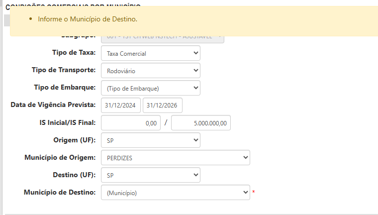
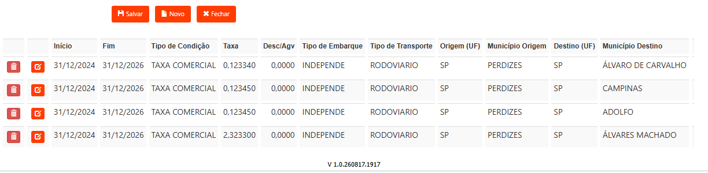

Três ideias simples, um teste rodando de verdade e um caso real — do pedido do negócio até o defeito corrigido.
Não por má fé. É que ninguém enxerga o próprio ponto cego.
"Está pronto" quer dizer coisas diferentes para quem pediu, quem programou e quem vai usar. Cada um usa a sua.
"Testei aqui e funcionou." Não dá para conferir depois, não dá para repetir, e não sobrevive à próxima mudança.
O defeito aparece para quem paga pelo sistema, no pior momento: quando já está em uso e já gerou consequência.
Um cálculo errado em produção não é um bug.
É uma cobrança errada — e ela já saiu.
Todo o resto do processo é consequência destas três.
O que o negócio pediu, escrito de um jeito que dê para verificar. Se não dá para verificar, não é requisito — é desejo.
A régua do "pronto", combinada antes de programar. Transforma discussão de opinião em conferência de fato.
A imagem da tela mostrando o resultado, guardada e datada. Sem ela, o "passou" é palavra de alguém.
Um caso de teste é um passo a passo curto que verifica um critério e termina com prova.
Um plano de teste é a lista desses casos, com a tabela que mostra qual caso cobre qual critério. É o que permite responder "o que foi testado?" sem depender da memória de ninguém.
Gravação real em ambiente de teste, sem ninguém no teclado. O teste abre o sistema, tenta entrar com senha inválida para conferir se o sistema recusa, lê o texto exato da tela — "Senha inválida." — e então entra com a credencial correta. Os rótulos azuis foram sobrepostos para o vídeo se explicar sozinho; o nome de usuário está mascarado de propósito.
0000900654001 · filial 901 · subgrupo 001 · ramo 54. Massa consultada antes de escrever o teste — nunca suposta.

Mudança no cálculo de taxa, passando a considerar o município de origem. Mexer em cálculo é o tipo de mudança que ninguém percebe quando dá errado — o número sai, só sai errado.
Cada caso amarrado a um critério, incluindo os chatos: rota sem taxa, cidade inexistente, e a conferência de que o cálculo antigo continuava certo. Revisado por quem pediu a mudança.
Cada caso gerou o antes, a ação e o depois. Alguém pode abrir esse plano seis meses depois e ver o que foi verificado, em qual ambiente, em que dia.
Quando a rota não tinha taxa cadastrada, o sistema devolvia zero — sem mensagem, sem alerta, sem impedir. Ou seja: emitia a apólice com prêmio zerado, e ninguém saberia.
Erro de servidor ao gravar sem o município de origem. O usuário perdia o preenchimento e não recebia explicação.
Os dois viraram itens de trabalho atribuídos no mesmo dia a quem ia corrigir, com a evidência anexada. Depois da correção, os mesmos passos foram repetidos e fotografados de novo.
O ganho não foi o relatório bonito.
Foi o zero que não chegou na fatura do cliente.
Regressão é conferir se o que já funcionava continua funcionando depois da mudança nova. É onde mais se perde dinheiro sem perceber: a novidade é testada, o resto ninguém olha — até um cliente ligar dizendo que algo antigo parou.
Todo caso aprovado vira script antes de o trabalho fechar. Aprovado duas vezes, entra na bateria permanente que roda a cada entrega — o esforço de hoje vira cobertura de graça nas entregas seguintes.
Escrita antes, combinada com quem pediu. Menos retrabalho por mal-entendido — o desperdício mais barato de eliminar.
Não por quem paga. Muda o custo e muda a conversa com o cliente.
Como cada tela funciona, o que já foi testado, o que deu errado antes. Deixa de morar na cabeça de uma pessoa.
Existe uma lista do que foi verificado, com prova e data. Dá para decidir com informação — inclusive assumir um risco conhecido.
Sem ferramenta nova, sem licença, sem time grande para o primeiro ciclo.
O primeiro ciclo cabe em uma sprint.
O que ele deixa — a régua escrita e a prova guardada — não se perde mais.
Caso real e números conferidos no repositório de planos de teste e no sistema de gestão da equipe, abril a agosto de 2026. Vídeo gravado em ambiente de homologação, sem intervenção humana.